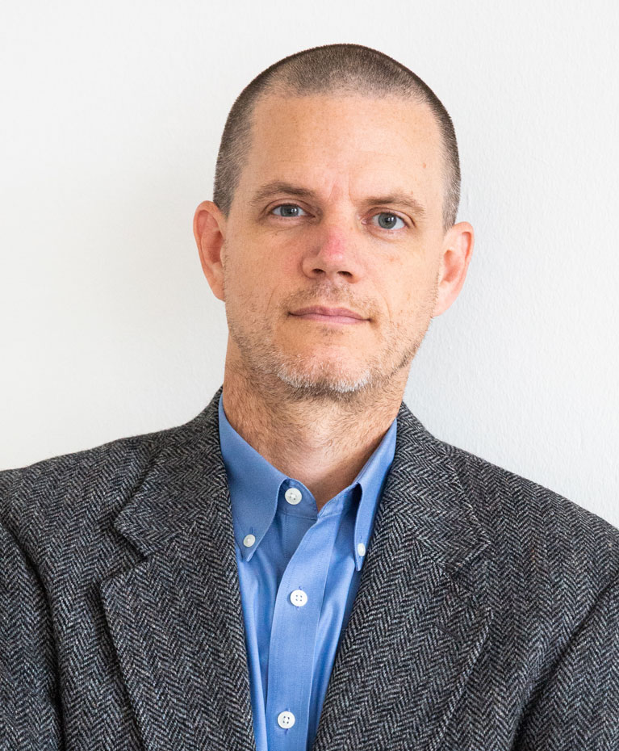
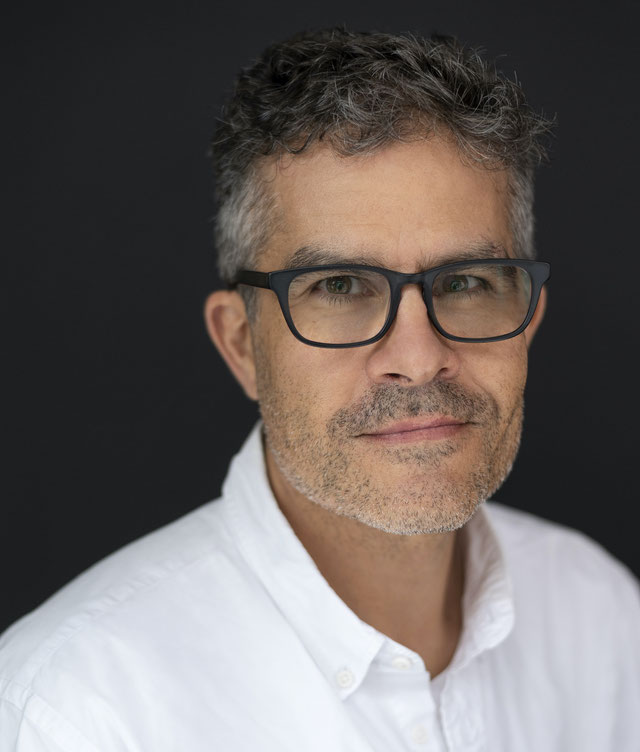
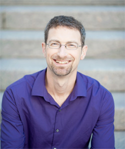

Artists
Alexander Galloway

Writer and computer programmer with a focus on issues in philosophy, technology and theories of mediation Currently a professor of Media, Culture, and Communication at NYU Steinhardt since 2002 Author of several books on digital media and critical theory.
The Interface Effect, Laruelle: Against the Digital etc. Is a spokesperson and has given over 200 talks in 10 countries around the globe.
Personal Blog and Website
NYU Profile
Mark Tribe

“An artist who believes in the power of aesthetic experience to forge
new pathways of understanding." American Artist and the founder of
Rhizome. Currently the chair of the MFA (Master of Fine Arts) program in
School of Visual Art in New York Known for early contributions of the
field of new media art, currently known for landscape pictures that
explore American ideas about nature and land.
Personal Website
Martin Wattenberg

“My research focuses on ways technology can create connection, insight,
narrative, and beauty.” Known for visualization-based artwork. Currently
a professor at Harvard working and a part-time member of Google
Research's PAIR (People + AI Research) initiative which he co-founded
Currently focuses on making AI technology broadly accessible and
reflective of human values.
Personal Website